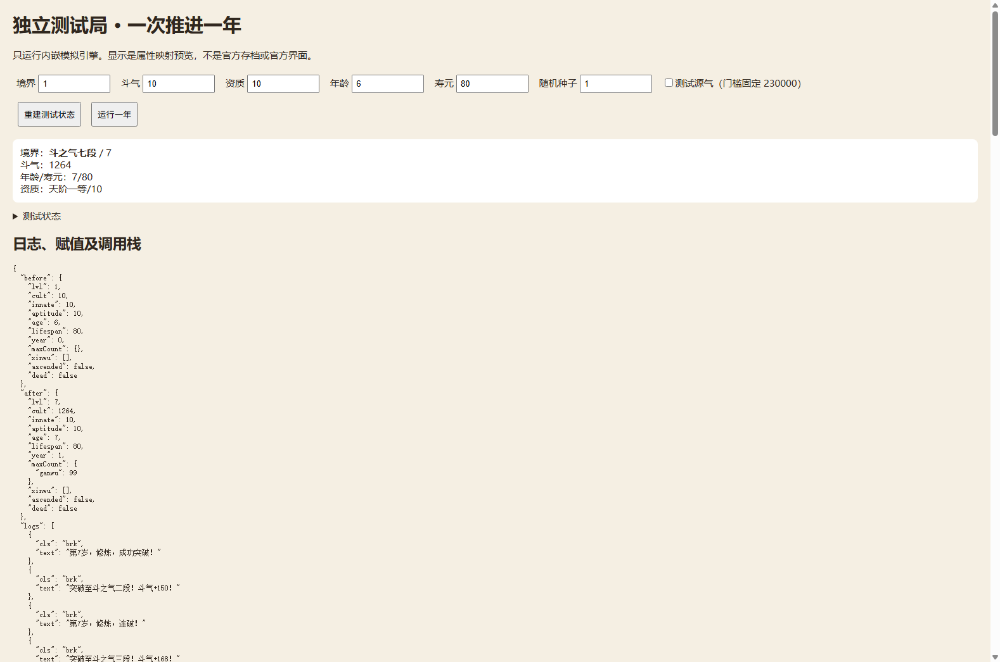
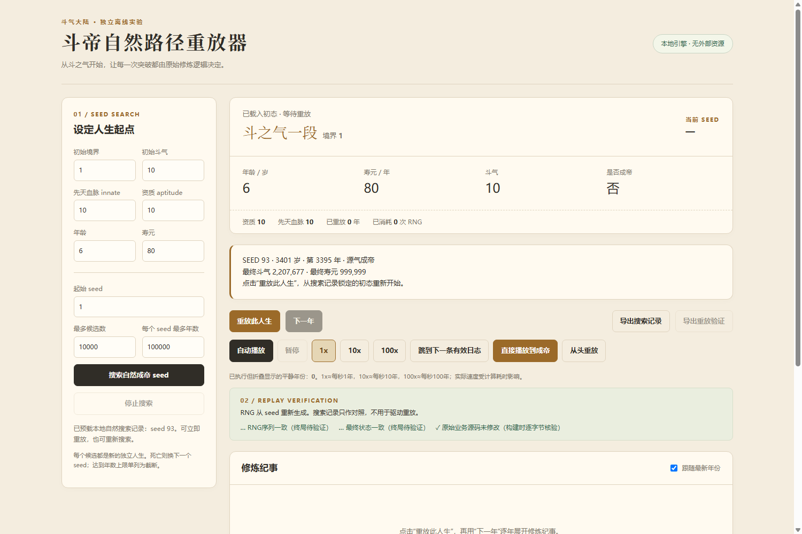

00 / INTRO · LAB
doupo-analysis
A tiny reverse-engineering experiment that got slightly out of hand.
一开始只是想看看，能不能把一个网页小游戏拆开，读懂它是怎么运行的。
01 / WHY I OPENED IT UP
只是想拆开看看。
看到那个斗破题材的网页小游戏时，我没有什么明确的产品目标。只是觉得，这种东西拿来做一次逆向和源码阅读实验，会不会很有意思？
我想让 Codex 帮忙找到真正运行的页面、代码和资源，把能分析的部分整理到本地，再试着自己看懂它。
如果让 Codex 帮我把它拆下来，我最终能不能真正看懂这个游戏是怎么运行的？
02 / GETTING THE GAME APART
从一个网页，往里找。
入口只是一个网页。我想找到的是它背后真正执行游戏的那一层：哪些代码负责运行，哪些数据决定事件，又该从哪里开始读。
- 找到实际游戏页面
- 定位 JavaScript、数据与资源
- 整理到本地，阅读游戏逻辑
- data.js
- 血脉与境界名称、突破参数、寿元奖励和源气数据。
- events.js
- 事件的年龄范围、权重、次数、条件与成功／失败处理。
- sim.js
- 创建角色、推进年份、突破、事件抽取与成帝判定。
- game.js
- 连接开始按钮、定时推进、日志队列和属性显示的页面层。
本地四份文件与已保存的 online 快照逐一 SHA-256 核对一致；这是历史快照对照，不代表当前线上版本。离线实验只加载前三份逻辑源码，不执行 game.js 或 SDK。来源：online/comparison.json、runtime-lab-sources.json、四份源码。

03 / UNDERSTANDING HOW IT ACTUALLY WORKS
代码背后，是怎样的一局游戏？
最开始真正想得到的，是一份能看懂的游戏规则：人物属性如何变化，修炼、突破、事件和寿命如何把一局游戏带向结束。
这些问题只能沿着状态变化去读。一个条件判断解释了一步，还要继续追它影响了什么。
- 创建角色。createGame 抽血脉，初始化斗气和寿元；从 6 岁、境界 1 开始。
- 推进一年。rollYear 先增加 year 与 age，再检查古帝传承、系统、炎帝和源气等特殊路径。
- 结算修炼。先计算普通突破层数，再逐层发放境界、斗气和寿元收益，随后检查“水到渠成”。
- 检查成帝与寿终。境界至少 100、尚未成帝且剩余寿元不超过 10 年时尝试成帝；随后检查年龄是否超过寿元。
- 抽取事件，再检查寿元。事件可能改变属性、寿元或死亡状态，返回日志与更新后的本局状态。
这不是每年都会走完的直线：古帝、成帝尝试和寿终可以提前返回；页面有日志时也不会推进新的一年。所以，一条日志不等于一年。
来源：sim.js createGame / rollYear；game.js startGame / playTick / tick；runtime-analysis.md。
04 / WRITING DOWN THE RULES
把散落的规则，重新拼起来。
源码不会直接告诉我“游戏规则是什么”。条件、数据、事件和状态变化分散在不同地方，需要重新连起来，才能写成给人看的说明。
我把它们写成解释，而不是代码直译。下面的规则限定于这份保存的源码；路径存在，不等于测出了自然发生概率。
- 斗气不是普通突破的经验槽。attemptBreak 不检查或消耗 cult；突破成功后，levelUp 才增加斗气与寿元。
- 100 和 101 之间不是再升一级。普通升级上限是 100。进入 101 有古帝传承、源气达标、强冲帝位三条路径。
- 抽到事件，不等于满足条件。先按年龄与剩余次数构造池，再按权重抽取；抽中就扣次数，之后才判断 cond。
- 注释也需要验证。源气门槛的实现是 230,000–240,000；小层突破也可能获得区间随机奖励的 1%（四舍五入）寿元，不能只照抄旧注释。
为了看清这些变化，我又做了单步调试：在独立状态上调用一次 rollYear，记录前后状态、赋值和日志。runtime-checks.json 留下了 8 项检查，禁止接口访问均为 0；UI 检查使用 DOM 替身。
来源：sim.js attemptBreak / lifespanGain / levelUp / rollEvent / tryFeisheng；data.js XINWU；events.js；runtime-analysis.md、runtime-checks.json、runtime-lab-ui.js。runtime-lab.html 是独立入口；runtime-lab-install.js 是历史安装器，后续 BATCH-README 已明确不再使用它。
05 / THEN THE QUESTIONS GOT BIGGER
Then the questions got bigger.
规则逐渐看懂之后，最开始的目标反而不够用了。
- 正常玩，到底有多难达到最高境界？
- 那些特殊路径，是怎么触发的？
- 如果把游戏跑很多次，会看到什么？
- 一局随机的人生，能不能完整重现？
“读懂它”慢慢变成了“试试看”。后来的工具，是这些问题一点点带出来的。
06 / SIMULATING THE GAME
总不能一直手动玩下去。
想知道一种结果有多常见，只靠反复玩很难回答。于是实验继续往前走：固定条件，批量运行，把结果留下来比较。
批量工具把每局初态深复制，在独立引擎里执行；主测试局与事件内部临时模拟分开统计，注入测试不混进自然样本。
10,000
simulated runs
43.28%
1.30%
这是 fixed aptitude 10 / fixed initial state 条件下的模拟结果，不是所有随机开局的总体成帝概率。xiandi 的结果只能写作 0 observed，不代表 0% probability。
来源：validation-10000-20260909/simulation-summary.json、run-metadata.json、simulation-report.md。10000 局全部完成，截断 0 局；三条成帝路径之和等于 130。
07 / REPLAYING RANDOMNESS
同一局人生，还能再来一次吗？
批量运行之后，我开始在意另一件事：看到一局有意思的过程，能不能把它找回来？
问题延伸到 Seed、RNG 重放和可复现人生。固定随机性，是给观察和调试留下一个可以返回的起点。
3401 = 6 + 3395
- Seed 93
- 从 1 开始顺序搜索得到的首个成功候选，走源气成帝路径；这是“找到成功即停止”的选择样本。
- 3,395 年 → 3,401 岁
- 3,395 是主局调用 rollYear 的次数；年龄从 6 岁开始，因此终局为 6 + 3,395 = 3,401 岁。415 条原始日志不是年度推进次数。
- 20,291 次随机取值
- 这是单局从固定初态到成帝取得的 53 位随机数数量，包含事件内部临时模拟；不是底层 32 位 RNG 输出次数。
重放器使用 xoshiro128**、splitmix32 初始化和 53 位随机数适配。每次重建初态与 RNG，重新执行原始 rollYear；事件里的临时模拟也会消耗随机数。
但输入同一个 Seed，并不一定是同一局。
把 Seed 93 放进普通开局后，人生却对不上：普通 createGame 先用了 3 个 draw 抽血脉、斗气与寿元；基准直接从 draw 0 推进年份。修正的是开局协议，不是随机算法。
加载完整基准初态、重建引擎和 PRNG 后，验证再次得到境界 101、源气成帝、斗气 2,207,677 和寿元 999,999；20,291 个 draw 与完整终态对照通过。可复现意味着源码版本、初态、算法和消费顺序都一致。

REPRODUCIBILITY
A small set of fixed agreements.
- Batch seed
- 20260909
- Runs
- 10000
- RNG
- xoshiro128**
53-bit uniform adapter
splitmix32 run seeding - Initial
- lvl 1 · age 6
innate 10 · aptitude 10 - Termination
- dead || ascended
- Truncation
- none
- Per run
- deep copy initial state
seed + runIndex independent RNG stream
来源：seed-search-results.json、replay-verification.json、doupo-emperor-replay.html、README-EMPEROR-REPLAY.md、SEED93-REPRODUCTION.md、seed93-rng-first100.json、seed93-clone-verification.json。单步调试面板使用的是另一套 LCG 随机源，不能与这里的重放器混为一谈；也不是官方浏览器原始随机流的回放。
08 / WHAT I LEARNED
比最开始，多了很多问题。
原本以为自己只是在拆一个网页小游戏。沿着“它为什么这样运行”继续追下去，后来遇到了状态变化、随机逻辑、模拟、工具构建，还有怎么验证自己的理解。
这次比较清楚地感受到，很多东西并不是从“我要学习某个技术”开始的，而是从“这个东西到底是怎么回事”开始的。
记录说明 · 起因来自我的项目回顾，机制与数字来自本地源码、保存的配置和验证报告。本页只整理证据，不发布原始源码或大型日志。本次重新核对了快照哈希与保存的 RNG 序列，没有重新执行模拟；原工具报告中的 DOM 替身测试也不等于真实浏览器视觉或 CSP 实测。